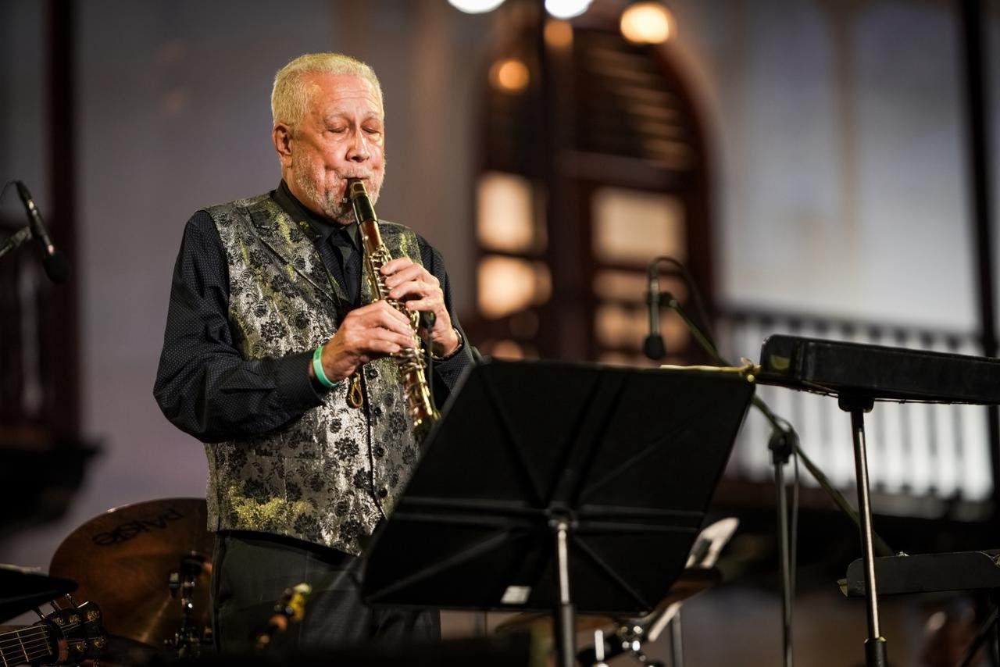

Festivals · Music
Cartagena Festival de Música 2027 (21st edition)
- Dates
- –
- Location
- Cartagena, Colombia
- Format
- In-person
- Category
- Music
- Industry
- Classical music festival
- Organiser
- Fundación Salvi
- Expected attendance
- 15,000
- Official website
- https://cartagenamusicfestival.com/
About
Theme 'La proporción divina'; English Chamber Orchestra is orchestra in residence. Venues include Teatro Adolfo Mejía and Plaza San Diego. Colombia dates are local (Colombia time, UTC-5 all year, no daylight saving).
Topics: classical music, chamber music, orchestral music.
Official festival news (14 Jan 2026): 'Con 15.000 asistentes, el Cartagena Festival de Música celebró sus 20 años' (2026 edition).
Sources
- Official — https://cartagenamusicfestival.com/
- Official — https://cartagenamusicfestival.com/el-cartagena-festival-de-musica-presenta-su-xxi-edicion-la-proporcion-divina-musica-en-perfecto-equilibrio/
- Official — https://cartagenamusicfestival.com/programacion/
- Official — https://cartagenamusicfestival.com/con-15-000-asistentes-el-cartagena-festival-de-musica-celebro-sus-20-anos-de-excelencia-artistica/